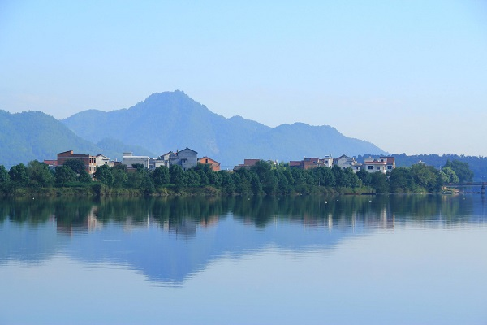
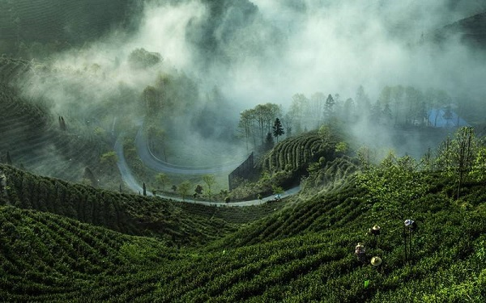
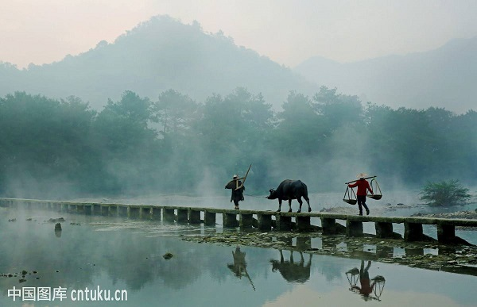
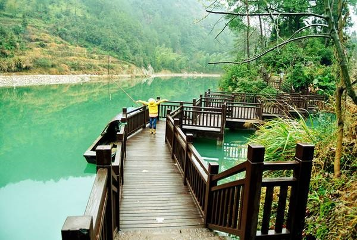
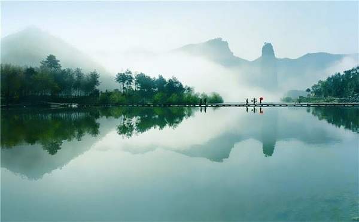
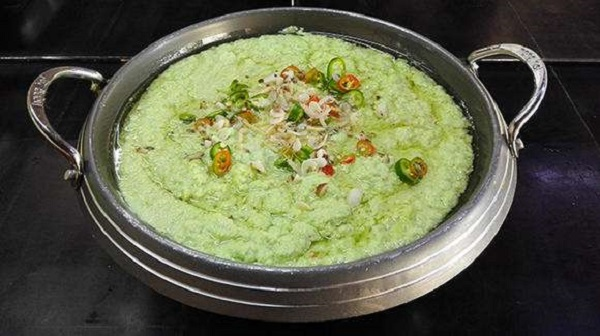
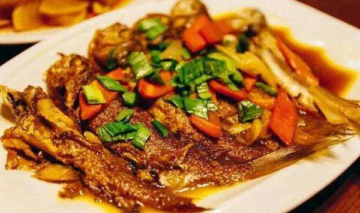

morly旅游网
一说浙江，你肯定想到了杭州钱塘江大潮，想过去丽水感受一下吗？
丽水，古称处州，浙江省辖陆地面积最大的地级市；位于浙江省西南部，坐标东经118°41′～120°26′和北纬27°25′～28°57′之间，地势以中山、丘陵地貌为主，由西南向东北倾斜
丽水古称处州，因其貌美的地理环境而被称为“浙江绿谷”，这个称谓我们便不难看出丽水一定是一个有山有水的好地方。800里瓯江静静地淌过处州大地，郁郁葱葱的树木丛林遍布山野，壮阔的山河与秀丽夺目的风景完美结合。
凤阳山黄茅尖
龙泉市凤阳山黄茅尖海拔1929米，庆元县百山祖海拔1856.7米，分别为浙江省第一、第二高峰。2005年1月，丽水市被命名为第三批国家级生态示范区。
 丽水水文
丽水市区域内有瓯江、钱塘江、飞云江、椒江、闽江、赛江，被称为“六江之源”。溪流与山脉走向平行。仙霞岭山脉是瓯江水系与钱塘江水系的分水岭，洞宫山山脉是瓯江水系与闽江、飞云江和赛江的分水岭，括苍山山脉是瓯江水系与椒江水系的分水岭。
丽水风景名胜
截至2016年底，丽水市有国家AAAA级旅游景区19家，分别是莲都东西岩风景区、丽水市古堰画乡景区、龙泉山景区、龙泉青瓷小镇·披云青瓷文化园景区、中国青田石雕文化旅游区、青田石门洞、缙云仙都景区、缙云黄龙景区、遂昌南尖岩景区、遂昌金矿国家矿山公园、遂昌县神龙飞瀑景区、遂昌千佛山、中国畲乡之窗景区、景宁云中大漈、云和梯田景区和仙宫景区、庆元百山祖景区、松阳箬寮原始林景区、松阳大木山茶园
 丽水特色食物
豆腐娘是浙江当地的传统小吃，如果去到浙江做客那么吃豆腐娘是必不可少好的一道美食。好溪是缙云人的母亲河，这条河里面孕育着很多的溪鱼，溪鱼生活在清澈无污染的好溪水中，因为是野生繁殖所以味道也特别鲜美，根本没有淤泥味。溪鱼去掉内脏以后放入油锅进行炖煮。红烧后的溪鱼汤汁味浓，吃过后回味无穷，属缙云主要特色菜之一。
 内容整理至网络，如有侵权，请联系我们！1255394075@qq.com